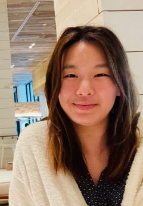
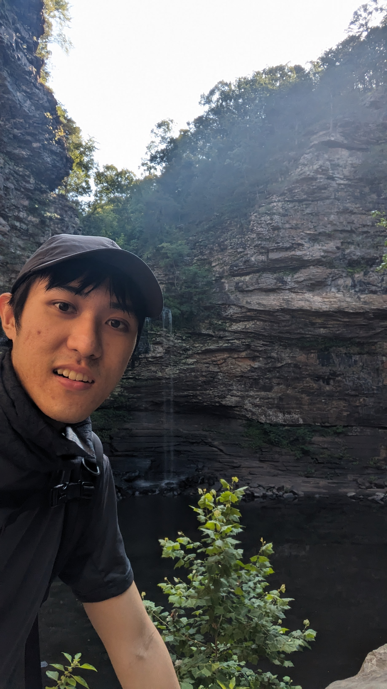
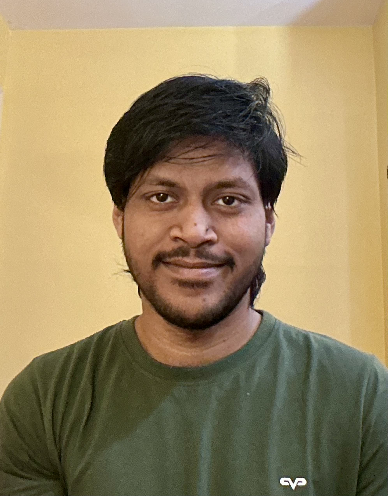
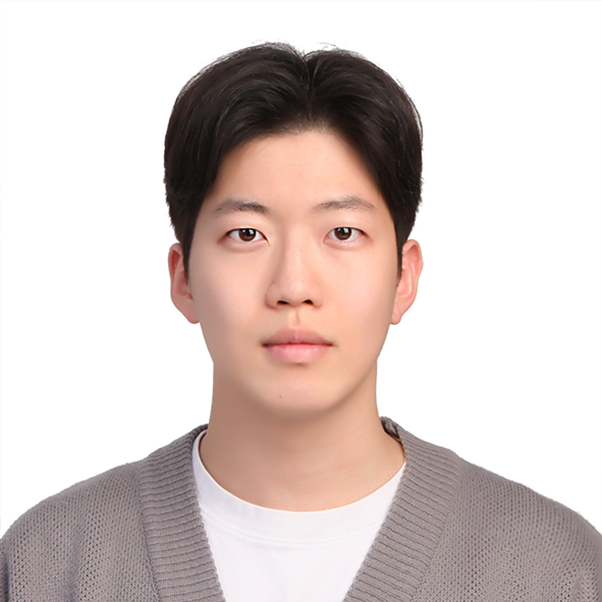

Members
Our group brings together researchers in molecular chemistry, electrochemistry, interfacial science, transport, and process engineering to develop molecularly programmed separations across molecular, interfacial, and process scales.

Hyowon Seo
Hyowon Seo is an Assistant Professor in the Department of Materials Science and Chemical Engineering at Stony Brook University. Her research group develops molecularly programmed separation systems by connecting molecular recognition, dynamic interfaces, and continuous processes. The group investigates how molecular structure, interfacial organization, and nonequilibrium transport govern selective capture, transfer, and release across complex chemical systems.
Before joining Stony Brook University in 2024, she was a postdoctoral associate in the T. Alan Hatton Group in MIT Chemical Engineering, where she developed electrochemical carbon-capture systems. She received her PhD in Chemistry from MIT in 2019, where she studied photoredox activation of CO2 in continuous flow with Timothy Jamison. She earned BS and MS degrees in Pharmacy from Seoul National University, where she studied natural-product synthesis with Young-Ger Suh.
Education and Experience
Postdoctoral Researchers
Jiae Ryu
PhD in Chemical Engineering, SUNY College of Environmental Science and Forestry, 2026
Current ResearchMolecular recognition for selective ion and critical-element separations
Graduate Researchers

Ping-Han “Bing” Wu
PhD student, Stony Brook University, Spring 2024–present
BS in Chemical Engineering, Chung Yuan Christian University, Taiwan, 2022
Current ResearchMembrane separations and electrochemical carbon capture

Shibsankar Mondal
PhD student, Stony Brook University, Spring 2025–present
BS in Chemical Engineering, University of Calcutta, India, 2022
Current ResearchDynamic electrochemical operation and conversion of captured CO2
Hyung Chan “Declan” Lim
Master’s student, Stony Brook University, Spring 2024–present
BS in Energy and Mineral Resources Engineering, Sejong University, South Korea, 2023
Current ResearchElectrochemical carbon capture
Undergraduate Researchers

Hanyi Seok
Undergraduate student in Engineering Science and Materials, Stony Brook University
Alumni
- Alex D’Acunto Master’s researcher · Spellman High Voltage
- Nashita Nawarah Undergraduate researcher
- Ahmed Nihal Undergraduate researcher
- Dereck Severino Undergraduate researcher
- Alisher Abdurazzokov Undergraduate researcher
- Sam Chowdhury Undergraduate researcher
- Naiomie Michel Undergraduate researcher
- Ava Gross Undergraduate researcher
- Sheena Chen Undergraduate researcher
- Winnie Dong Undergraduate researcher
- Chelsea Walz Undergraduate researcher